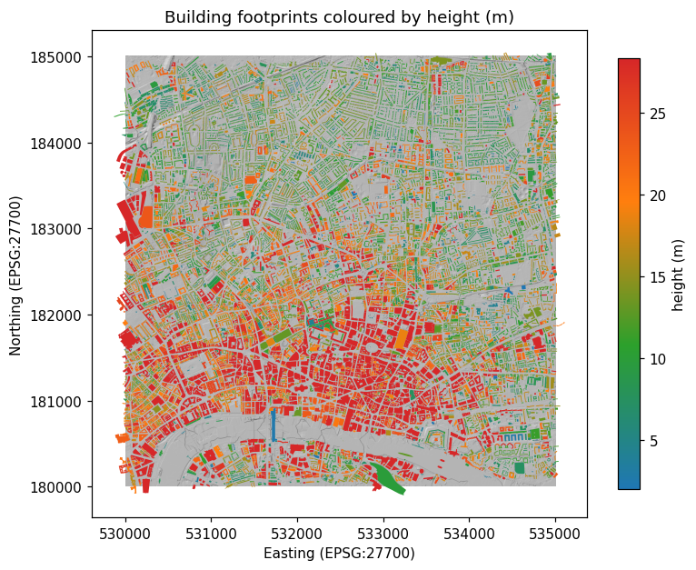
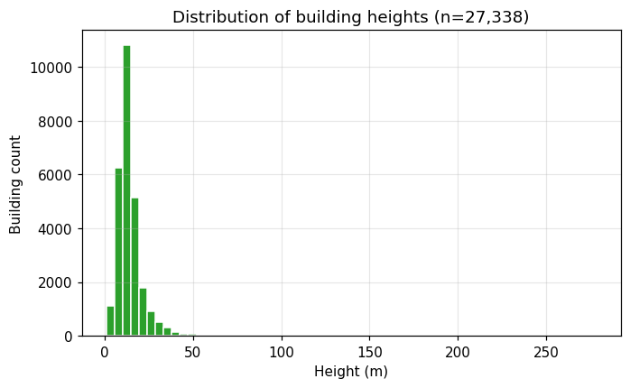
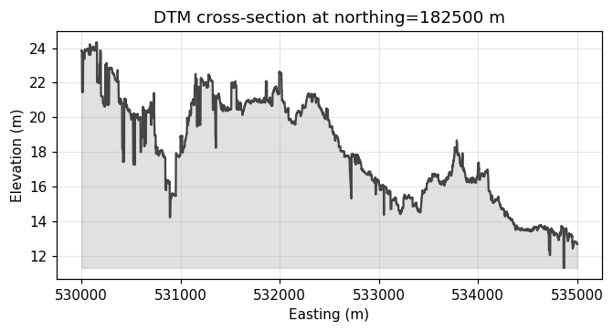

Automated extraction of building heights from classified airborne LiDAR — 27,338 buildings measured across 25 km² of Central London in under two minutes.
A client provided a 1.6 GB airborne LiDAR tile and asked whether it was the right way to measure the height of 400 buildings, after attempting to convert the point cloud to a mesh and inspect it manually in a 3D modelling tool.
That manual approach does not scale. By treating the .laz file as the primary input and using its ASPRS classification, the same job becomes a one-pass repeatable pipeline that produces a spreadsheet, a GeoPackage and an HTML report from a single command.
Outcome: Heights computed for 27,338 buildings (≈ 70× the original target of 400) in 111 seconds end-to-end, with a median building height of 12.9 m and a tallest measurement of 278.4 m.
.laz file with laspy + lazrs and split returns into ground (class 2) and building (class 6).shapely.contains_xy point-in-polygon test.p95(roof Z) − DTM(centroid). The 95th percentile suppresses spurious high returns from antennas, edge effects and low-density bins.


| Building ID | Easting (m) | Northing (m) | Footprint area (m²) | LiDAR points | Height (m) |
|---|---|---|---|---|---|
| BLD-22199 | 533,116.1 | 181,241.4 | 3,447 | 2,624 | 278.4 |
| BLD-16318 | 533,167.7 | 181,181.3 | 2,650 | 154 | 222.9 |
| BLD-6996 | 533,255.6 | 181,447.7 | 1,799 | 1,638 | 198.6 |
| BLD-11823 | 533,052.0 | 181,328.0 | 1,910 | 1,322 | 185.0 |
| BLD-0205 | 533,302.1 | 181,252.2 | 2,523 | 33 | 180.3 |
| BLD-22149 | 533,245.0 | 181,376.1 | 4,913 | 1,943 | 176.8 |
| BLD-22025 | 533,220.0 | 181,385.6 | 2,873 | 1,441 | 176.6 |
| BLD-22102 | 533,386.4 | 182,103.4 | 725 | 363 | 164.2 |
| BLD-18555 | 531,619.1 | 180,472.8 | 1,313 | 224 | 163.4 |
| BLD-11855 | 533,049.0 | 181,306.6 | 196 | 86 | 154.5 |
| BLD-19691 | 533,322.9 | 182,015.6 | 1,557 | 987 | 153.5 |
| BLD-20749 | 532,157.6 | 182,855.8 | 1,041 | 222 | 150.5 |
| BLD-0407 | 531,456.6 | 180,445.2 | 810 | 915 | 150.0 |
| BLD-16484 | 533,074.7 | 180,848.4 | 666 | 139 | 147.5 |
| BLD-13009 | 533,088.7 | 180,888.0 | 3,720 | 92 | 145.6 |
| BLD-9786 | 533,224.1 | 181,066.6 | 2,176 | 1,303 | 141.0 |
| BLD-20452 | 532,639.0 | 181,778.0 | 6,297 | 8,825 | 139.2 |
| BLD-21211 | 533,300.6 | 181,480.3 | 1,184 | 1,043 | 135.6 |
| BLD-22155 | 532,710.8 | 182,680.4 | 925 | 91 | 135.3 |
| BLD-4517 | 532,275.1 | 181,866.4 | 613 | 895 | 129.1 |
Heights range from 1.04 m to 278.37 m; the 95th percentile sits at 28.3 m, while the median is 12.9 m. Ground elevations across the tile span -23.5 m to 49.4 m above the British vertical datum.
.laz in roughly two minutes.